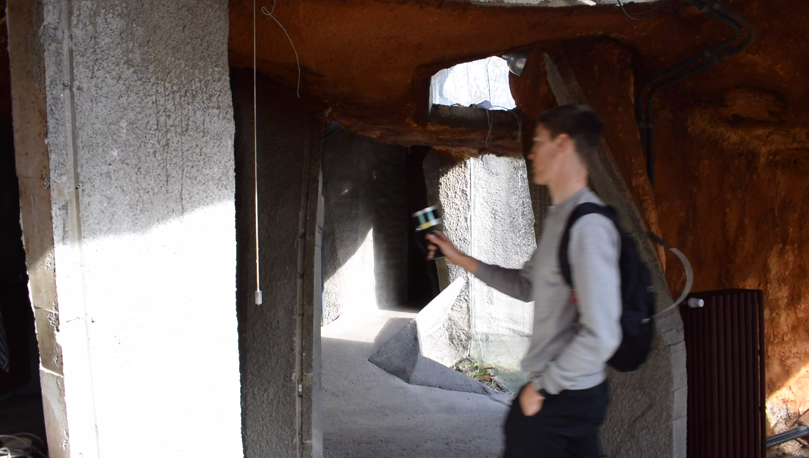
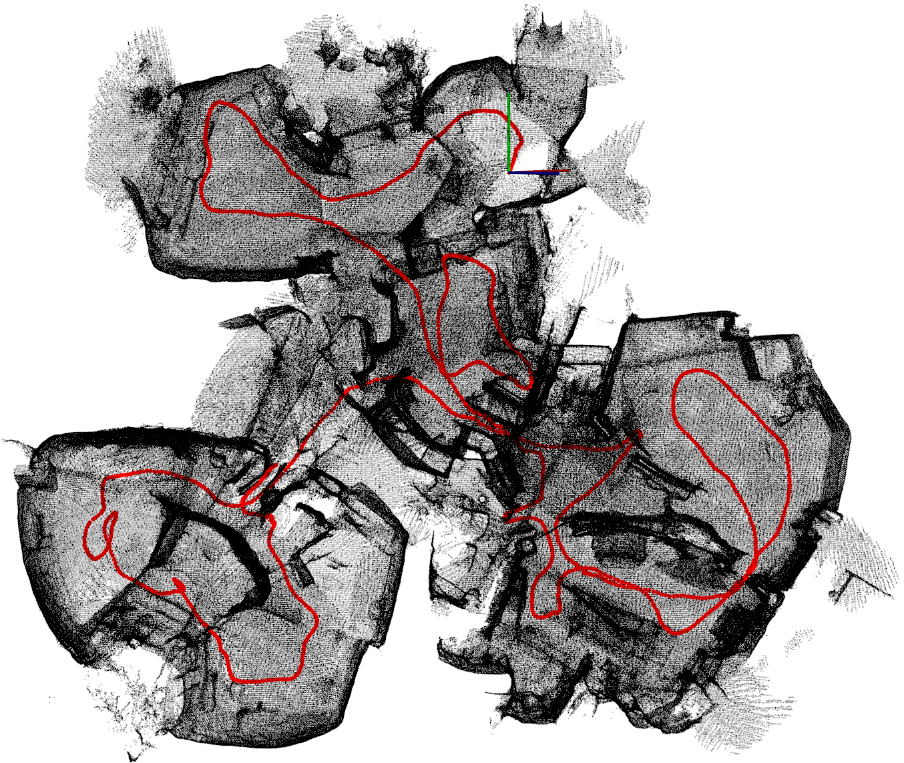
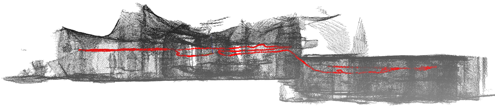
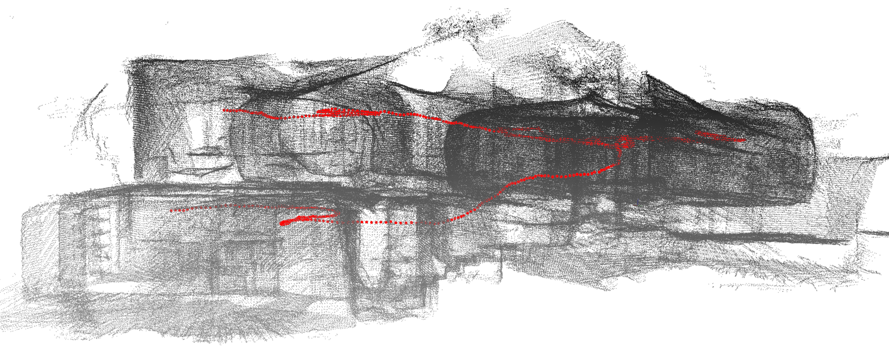

The Sculpture House Gillet
Today we did a measurement campaign in and around the sculpture house Gillet, located in Angleur, close to Liege, in Belgium.
The house is extraordinary as it was entirely built using shotcrete - also known as sprayed concrete - which allowed the creation of walls that are irregularly shaped, as can be seen in Figure 1. As a result, the house does not meet the `Manhattan-world’ assumption and lacks any kind of organization in the form of orthogonal and parallel planes. This made it the ideal use case for testing our mobile mapping system in a highly challenging environment. The actual goal of the 3D reconstruction is to print a miniature 3D model of the house in order to expose it at an architecture exhibition.
 Figure 1: The extraordinary shaped sculpture house Gillet in Angleur, built using shotcrete.
Figure 1: The extraordinary shaped sculpture house Gillet in Angleur, built using shotcrete.
As the house consists of steps and bumpy parts on the floor, it was not feasible to use Liborg. We thus held the Velodyne VLP-16 scanner in our hand while walking through the house. This way of working yielded another difficulty as the trajectory of the lidar scanner was far more jaggy while walking compared to the smooth trajectories usually resulting from Liborg.
 Figure 2: The lidar scanner was hand-held during acquisition because the floor had too many irregularities for Liborg to be able to move around.
The final 3D point cloud and trajectory as well as two cross sections of the model are depicted in in the images below. Unfortunately, we do not have any ground truth model, nor can we compare with a different type of odometry. It is, however, hard to see any artefacts in the 3D model, which demonstrates the effectiveness of our system.
 Bird’s-eye view of the 3D reconstruction of the Sculpture House Gillet in Angleur. The red line represents the trajectory of the lidar scanner.

